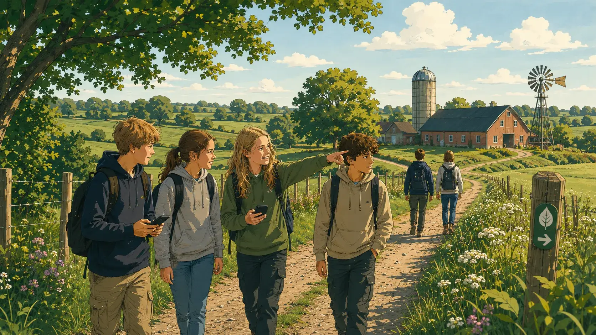
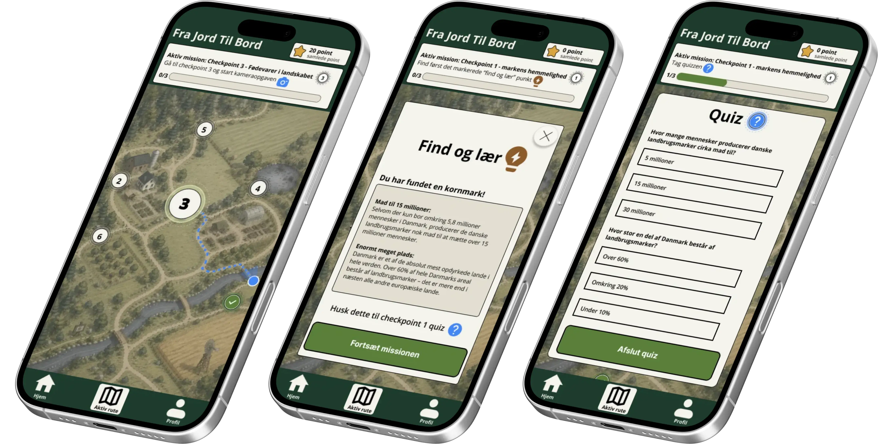

Missioner på ruten
Eleverne guides gennem små opgaver og checkpoints undervejs på ruten.
Læring i landskabet
SPOR app-konceptet kombinerer missioner, quizzer og kameraopgaver, så elever lærer gennem bevægelse og aktivitet.

Appens kerne
Eleverne guides gennem små opgaver og checkpoints undervejs på ruten.
Telefonen bruges aktivt som læringsværktøj fremfor som distraktion.
Gamification skaber motivation gennem badges, point og tydelig fremgang.
Prototype
Prototypen er udviklet med fokus på elevoplevelsen, hvor læring, navigation og motivation samles i et interaktivt rute-flow.
Åbn Figma prototype
UX og bæredygtighed
Løsningen arbejder med simple flows, dæmpede farver, komprimerede billeder og et minimalistisk interface.